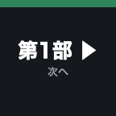
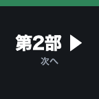

令和8年度 東京都 働き方改革パワーアップ応援事業
困ったらこれを見る
配信・撮影クルー 現場ハンドブック
07:0011:0014:0017:0020:00
搬入・仕込み
リハ・準備
開場
本 番
アフター
撤去
Zoom配信 13:45–15:35
知りたいことから引く。タップでそのページへ飛びます。
集合は 7:00、ベルサール虎ノ門。ピンの位置に集まってください。
画像をタップすると拡大します。右下の「目次」からいつでも移動できます。番号は元資料「配信・撮影概要」のページ番号です（表紙は省いています）。
時刻と、そのとき押すものだけを並べた表。紙のマニュアルと同じ中身です。
| 時刻 | きっかけ | 操作 | 出る絵 |
|---|---|---|---|
| 13:30 | 開場・待機 | ①OP（VTR） | OP_Real（ループ）＋BGM |
| 13:57 | 開会の3分前 | 収録を開始（録画ボタン） | — |
| 14:00 | 開会（司会 平井様） | ②第1部 へ。スライド 01→02 | 開会 |
| 14:00 | 事業紹介 | 03 へ送る  | 事業紹介_3つの無料支援 |
| 14:03頃 | 本日のスケジュール | 04 | タイムテーブル |
| 14:05 | 基調講演へ | 05 → 06 | 基調講演_中扉／有沢様プロフィール |
| 14:07頃 | ★ 有沢様の合図 | 07 まで送ってから ③第1部_登壇者（クリッカー） | 有沢様スライド（1〜42枚） |
| 14:45頃 | 質疑応答 | ②第1部 に戻して 08 | 質疑応答 |
| 14:59 | 基調講演 終わり | 09 | キーアート |
| 15:00 | 事例紹介 | 10 → 11 | 事例紹介_中扉／オカモトヤ |
| 15:01頃 | ★ オカモトヤ様 | 12 まで送って ③ | オカモトヤ様スライド（44〜54枚） |
| 15:06頃 | 1社目 終わり | ②第1部 に戻して 13 | 事例紹介_正和興業 |
| 15:07頃 | ★ 正和興業様 | 14 まで送って ③ | 正和興業様スライド（56〜64枚） |
| 15:12頃 | 2社目 終わり | ②第1部 に戻して 15 | 事例紹介_トーリツ |
| 15:13頃 | ★ トーリツ様 | 16 まで送って ③ | トーリツ様スライド（66〜74枚） |
| 15:18 | 3社目 終わり | ②第1部 に戻して 17 → 18 | 事例紹介_中扉／キーアート |
| 15:20 | ブース案内 | 19 | サステナブルワーク企業_登録制度 |
| 15:20 | 休憩へ | 20 → ④休憩（＋BGM） | クリッカーPCの休憩pptx（ループ）＋BGM |
| 15:30 | 第2部 トークセッション | ⑤第2部 へ。01 から  で送る | 第2部 01〜09 |
| 15:50 | 交流セッション | 第2部 10〜20 を送る | 第2部 10〜20 |
| 15:50頃 | ★ 荒川様 | ⑥第2部_登壇者（クリッカー） | 荒川様スライド（76〜80枚） |
| 16:55 | 閉会 | ⑤第2部 に戻して 21〜24 | 閉会／サーベイ／セミナー告知／アンケート |
| 17:00 | アフター交流 | 25 → 26 を送ったあと ⑦END（＋BGM） | ご参加ありがとうございました＋BGM |
| 17:30 | 終了 | 収録を停止 | — |
| 時刻 | きっかけ | 操作 | 出る絵 |
|---|---|---|---|
| 13:45 | 配信開始 | Zoomウェビナー開始 → ①OP（VTR） | OP_LIVE（ループ）＋BGM |
| 13:57 | 開会の3分前 | 収録を開始（録画ボタン） | — |
| 14:00 | 開会（司会 平井様） | ③本編／PinP | 会場の絵＋カメラのワイプ＋帯 |
| 14:05 | 基調講演 | スライド主体 → ③ ／ 人物主体 → ②全画面（カメラ） | 切替で見せる |
| 14:07頃 | 有沢様スライドへ | 会場の絵が有沢様スライドに変わる。③のままでよい | 会場の絵＝有沢様スライド |
| 14:45頃 | 質疑応答 | ②全画面（カメラ） | 登壇者・司会をカメラで |
| 15:00 | 事例紹介 3社 | ③ と ② を内容で切替 | — |
| 15:18 | 配信終了アナウンス（司会の締めと同時） | ④アンケート／PinP | アンケート案内＋カメラのワイプ |
| 15:20 | 本編おわり | ⑤END | ご参加ありがとうございました＋BGM |
| 15:35 | 蓋絵おわり | 配信を停止（収録は続ける） | — |
| 15:30〜 | 第2部以降 | 配信なし。会場のみ。カメラは回したまま収録を続ける | — |
| 17:30 | 終了 | 収録を停止 | — |
クリッカーPCに入っている登壇者様スライド（全81枚）を、登壇者ごとに分けた枚数です。
| 登壇者 | プログラム | 切替 | クリッカー通し | 枚数 |
|---|---|---|---|---|
| ① 有沢 正人 様HR GENESIS株式会社 代表取締役 | 基調講演 | 14:07頃 | 通し 1–42 | 42枚 |
| 切替キーアート（通し 43）→ ② オカモトヤ様へ | 1枚 | |||
| ② 鈴木 美穂子 様株式会社オカモトヤ 代表取締役 | 事例紹介 1社目 | 15:01頃 | 通し 44–54 | 11枚 |
| 切替キーアート（通し 55）→ ③ 正和興業様へ | 1枚 | |||
| ③ 星 徹 様正和興業株式会社 代表取締役 | 事例紹介 2社目 | 15:07頃 | 通し 56–64 | 9枚 |
| 切替キーアート（通し 65）→ ④ トーリツ様へ | 1枚 | |||
| ④ 鈴木 恵里子 様株式会社トーリツ 代表取締役 | 事例紹介 3社目 | 15:13頃 | 通し 66–74 | 9枚 |
| 切替キーアート（通し 75）→ 交流セッションへ | 1枚 | |||
| ⑤ 荒川 様交流セッション 進行 | 交流セッション | 15:50頃 | 通し 76–80 | 5枚 |
| 切替キーアート（通し 81）→ 終了（会場スクリーンへ戻す） | 1枚 | |||
OBSやStream Deckに読み込ませるものはGoogleドライブに置いてあります。